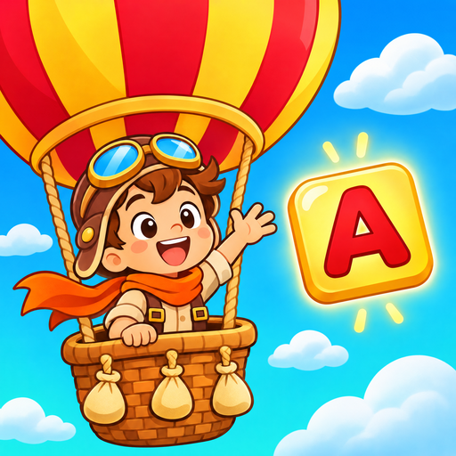

Word Quest
Hangman Rescue — Privacy Policy
Effective date: 9 November 2026. Contact: berkayanik@gmail.com. Turkish version below. / Türkçe metin aşağıda.
English
Hangman Rescue ("the game", localized names such as "Adam Asmaca: Kelime Kurtarma") is a single-player and pass-and-play word game by Kerem Berkay Yanık. There are no accounts or logins and we do not sell personal data.
1. What stays on your device. Your progress, coins, settings, daily streak and whether you bought "Remove Ads" are saved only on your device. We have no server that receives them. Words typed in Two Players mode never leave the device. If you delete the game, this data is deleted. Android's backup to your Google account may include it, as for any app.
2. Advertising (Google AdMob). The game is free and shows ads from Google AdMob: a banner, occasional short ads between words, and video ads only when you choose one (for example "Free coins" or "Second chance"). To show and measure ads, Google's SDK may process your device's advertising identifier (Android advertising ID, which you can reset or delete in Android Settings → Privacy → Ads), an app-scoped identifier (app set ID), your IP address and the coarse location derived from it, device and app information (model, OS version, language) and how you interact with ads. See policies.google.com/technologies/partner-sites and policies.google.com/privacy.
Consent (EEA, UK, Switzerland): before any ad is requested, Google's consent form (UMP, IAB TCF) asks for your choices. Ads are limited to general-audience content. The web version of the game shows no ads.
3. Purchases. "Remove Ads" is a one-time purchase through Google Play. Google processes the payment; the game only learns from Google Play whether the item is owned, and stores that on your device. "Restore purchases" asks Google Play again.
4. Children. The game is not directed at children under 13. We do not knowingly collect personal data from children.
5. Your rights. We hold no personal data on our own servers, so there is nothing for us to look up or delete beyond what is on your device. For data held by Google you can use Google's tools above, or write to us at berkayanik@gmail.com and we will help.
6. Changes. We will update this page and the date above when the game's data use changes.
Türkçe
Hangman Rescue ("oyun", Türkçe adı "Adam Asmaca: Kelime Kurtarma"), Kerem Berkay Yanık tarafından geliştirilen tek kişilik ve aynı cihazda iki kişilik bir kelime oyunudur. Hesap veya giriş yoktur, kişisel verileri satmayız.
1. Cihazınızda kalanlar. İlerlemeniz, altınlarınız, ayarlarınız, günlük seriniz ve "Reklamları Kaldır" satın alıp almadığınız yalnızca cihazınızda saklanır. Bunları alan bir sunucumuz yoktur. İki Oyuncu modunda yazılan kelimeler cihazdan çıkmaz. Oyunu silerseniz bu veriler silinir. Her uygulamada olduğu gibi Android'in Google hesabına yedeklemesi bunları içerebilir.
2. Reklamlar (Google AdMob). Oyun ücretsizdir ve Google AdMob reklamları gösterir: alt banner, kelimeler arasında ara sıra kısa reklam ve yalnızca siz seçtiğinizde video reklam (ör. "Bedava altın", "İkinci şans"). Reklamları göstermek ve ölçmek için Google SDK'sı cihazınızın reklam kimliğini (Android Ayarlar → Gizlilik → Reklamlar bölümünden sıfırlayabilir veya silebilirsiniz), uygulamaya özel bir kimliği (app set ID), IP adresinizi ve ondan çıkarılan yaklaşık konumu, cihaz ve uygulama bilgilerini (model, işletim sistemi sürümü, dil) ve reklamlarla etkileşiminizi işleyebilir. Ayrıntılar: policies.google.com/technologies/partner-sites, policies.google.com/privacy.
İzin (AEA, Birleşik Krallık, İsviçre): herhangi bir reklam istenmeden önce Google'ın izin formu (UMP, IAB TCF) tercihlerinizi sorar. Reklamlar genel izleyici içeriğiyle sınırlıdır. Oyunun web sürümünde reklam yoktur.
3. Satın alma. "Reklamları Kaldır" Google Play üzerinden yapılan tek seferlik bir satın almadır. Ödemeyi Google işler; oyun yalnızca ürünün sizde olup olmadığını Google Play'den öğrenir ve bunu cihazınızda saklar. "Satın alımları geri yükle" Google Play'e yeniden sorar.
4. Çocuklar. Oyun 13 yaş altı çocuklara yönelik değildir. Çocuklardan bilerek kişisel veri toplamayız.
5. Haklarınız (KVKK/GDPR). Kendi sunucularımızda kişisel veri tutmadığımız için cihazınızdakiler dışında bulup silebileceğimiz bir veri yoktur. Google'daki veriler için yukarıdaki Google araçlarını kullanabilir veya berkayanik@gmail.com adresine yazabilirsiniz, yardımcı oluruz.
6. Değişiklikler. Oyunun veri kullanımı değişirse bu sayfayı ve yukarıdaki tarihi güncelleriz.